This chapter opens Part II of the book, "Using Pretrained Language Models", and uses one small job to show off many kinds of model: decide whether a movie review is positive or negative. The data is the Rotten Tomatoes dataset (8,530 training reviews, 1,066 test reviews). First come representation models (BERT-style, nongenerative): a ready-made task-specific sentiment model (F1 0.80), then a frozen embedding model plus a small logistic regression you train on a CPU (F1 0.85), then the same embeddings with no labeled data at all, just by comparing each review with the sentence "A positive review" (zero-shot, F1 0.78). Then come generative models: the open encoder-decoder Flan-T5, told what to do with a prompt (F1 0.84), and the closed ChatGPT (GPT-3.5) through OpenAI's API (F1 0.91). Along the way you learn how to read a classification report (confusion matrix, precision, recall, F1), how T5 and ChatGPT were trained, and practical caveats: pick models for speed as well as accuracy, watch API costs and rate limits, and distrust scores from a model whose training data you cannot see.
One task, one dataset, one evaluation function, and then a tour of model families. Each row answers the question raised by the row above it. The orange boxes are the approaches; the number after each is the weighted-average F1 score the book reports on the same 1,066 test reviews.
Pages 131–132 are only the part title page ("PART II · Using Pretrained Language Models") and a blank back page. There is no introduction text. The title itself is the message: Part I (Chapters 1–3) explained what language models are and how they work inside (tokens, embeddings, attention). Part II (Chapters 4–9 of this book) is about using models that other people have already trained, without training them yourself.
A pretrained model is one that has already been trained on a huge amount of data. In Part II you load such a model, give it your text, and use what comes out. You never change its weights. That is why Chapter 4 keeps every model frozen.
Part I was a cooking class: how dough, heat and spices work. Part II is ordering from restaurants that already exist: you choose the right kitchen for the dish and tell them exactly what you want. Part III is opening your own kitchen. Where it breaks: with models you can always look at the output scores and wire models together in ways a restaurant menu would never allow, like taking the embedding "half-cooked" and finishing it with your own small classifier (plate 08).
Classification is one of the most common tasks in NLP (natural language processing). The goal: train a model to assign a label (also called a class) to some input text. The book lists typical uses:
The authors say the impact of language models, both representative and generative, on classification "cannot be understated" (they mean it is very large).
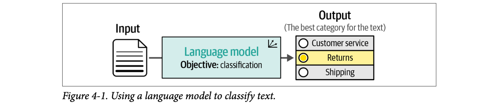
How to read this figure. Left: a document (any text). Middle: a language model whose objective is classification. Right: a fixed list of possible categories (Customer service, Returns, Shipping); the model picks the best one, here Returns (highlighted in yellow). The key idea is that the output is one choice from a closed list, not free text.
The chapter is an accessible introduction to using language models that have already been trained. Because text classification is a broad field, it uses several techniques to explore language models. It has two big parts:
The focus is on pretrained language models: models already trained on large amounts of data, which we can use to classify text. Figure 4-2 shows that the two families do the same job in different ways.
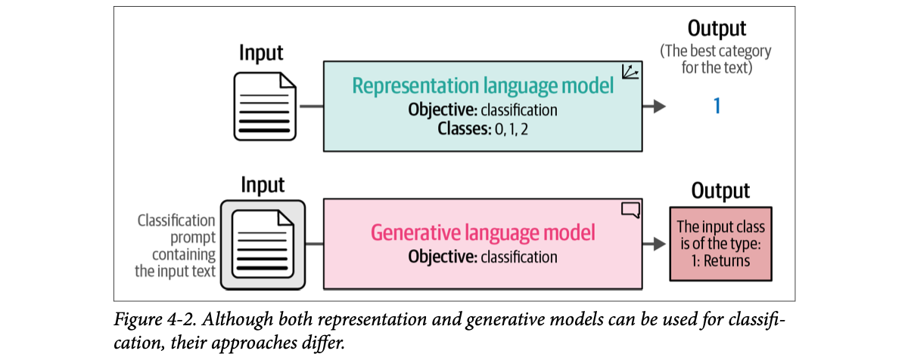
How to read this figure. Top row (teal): a representation language model is built with a fixed set of classes (0, 1, 2). You hand it the raw text and it hands back a number, here 1. Bottom row (pink): a generative language model has no built-in classes. You must wrap the text in a classification prompt (the grey box: "prompt containing the input text"), and it answers with text: "The input class is of the type: 1: Returns". You then have to read the class out of that sentence. Same objective, different interface: number vs sentence.
The chapter introduces many language models, generative and nongenerative, and the common Python packages for loading and using them (datasets, transformers, sentence-transformers, scikit-learn, openai).
Although the book is about LLMs, the authors strongly advise comparing these examples against classic but strong baselines, such as representing text with TF-IDF (term frequency–inverse document frequency: each word is weighted by how often it appears in this document and how rare it is across all documents) and training a logistic regression classifier on top. If a 10-line TF-IDF model is almost as good, the big model may not be worth its cost.
A representation model used for classification ends in a small classification head: a layer with one output per class, so the answer is always a score for each class and you take the biggest. A generative model ends in a layer with one output per token in its vocabulary: it can say anything, so the class must be asked for in the prompt and read back out of the words it writes.
Outputs are modelled to show the shape of each answer (vector of scores vs a sentence), not real model outputs.
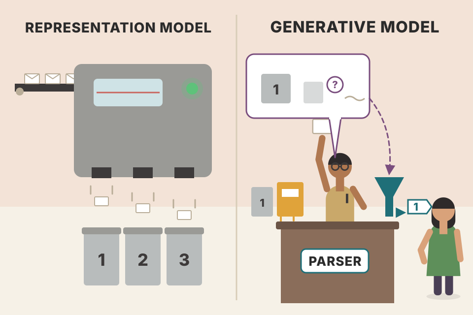
Sorting letters at a post office. A representation model is a sorting machine with fixed bins (PIN codes): a letter goes in, it drops into bin 1, 2 or 3. A generative model is a clever clerk you can talk to: you say "which bin does this go to?" and the clerk replies in a sentence, "This looks like it belongs to bin 1, Returns". The clerk can also sort into bins that didn't exist yesterday if you name them. Where it breaks: the clerk may answer "probably bin 1, but it could be 2", so you need rules to turn chatty answers into a clean label; the machine never chats.
"How would you build an intent classifier for a support bot?" Say: "First I'd decide whether I need a fixed label set and low latency. If so, a small encoder model or embeddings plus logistic regression gives a calibrated score in milliseconds. If labels change often or I have no data, an LLM with a constrained prompt works on day one. I'd benchmark both against TF-IDF plus logistic regression on a labeled test set before choosing." In a voice agent this matters: routing a caller's intent must be fast, so a small classifier often sits in front of the LLM.
All examples use data from the Hugging Face Hub, a platform that hosts models and also datasets. The dataset is the well-known "rotten_tomatoes" dataset (Pang & Lee, 2005, footnote 1). It contains 5,331 positive and 5,331 negative movie reviews from the Rotten Tomatoes website, so 10,662 in total and perfectly balanced.
To load it, the book uses the datasets package, which is used throughout the book:
from datasets import load_dataset
# Load our data
data = load_dataset("rotten_tomatoes")
data
# DatasetDict({
# train: Dataset({ features: ['text', 'label'], num_rows: 8530 })
# validation: Dataset({ features: ['text', 'label'], num_rows: 1066 })
# test: Dataset({ features: ['text', 'label'], num_rows: 1066 })
# })load_dataset("rotten_tomatoes") downloads the dataset from the Hub by its name and caches it locally.DatasetDict: a dictionary of splits. Each split has two columns (features): text (the review) and label (0 or 1).How the chapter uses the splits: the train split is used when a model is trained, and the test split is used to validate (score) the results. The extra validation split can be used to further check generalization if you used the train and test splits to do hyperparameter tuning (choosing settings like learning rate). Why that matters: if you keep tweaking settings until the test score looks good, the test score is no longer an honest estimate; a third untouched split gives you one.
A look at the first and last training examples:
data["train"][0, -1]
# {'text': ['the rock is destined to be the 21st century\'s new " conan " and that he\'s
# going to make a splash even greater than arnold schwarzenegger ,
# jean-claud van damme or steven segal .',
# 'things really get weird , though not particularly scary : the movie is all
# portent and no content .'],
# 'label': [1, 0]}Notice the text is lowercased and the punctuation is split off with spaces (" , ", " . "): this is how the dataset was prepared. The reviews are short and labeled positive (1) or negative (0), so the chapter focuses on binary sentiment classification (binary = two classes).
The first two rows are the book's examples (train[0] and train[-1]); the others are short illustrative reviews in the same style, labelled "illustrative".
A board exam. The train split is the textbook and practice questions you study. The test split is the final exam paper, sealed until the end. The validation split is the pre-board mock exam: if you keep adjusting how you study based on the mock, you need the sealed final to know your true level. Where it breaks: a student remembers questions; a model can also "remember" test data if it ever saw it in training, which is exactly the worry about ChatGPT in plate 12.
A balanced dataset (as many positives as negatives) makes accuracy meaningful: a model that always says "positive" would score only 50%. The test split also has 533 of each class (you will see "support 533" in every report). Keeping one fixed test split for every method in the chapter is what makes the F1 scores 0.80 / 0.85 / 0.78 / 0.84 / 0.91 comparable.
"Why three splits?" Train fits the parameters; validation picks hyperparameters, prompts or thresholds; test is touched once to report the final number. If you tune on test, you overfit to it and your reported score is optimistic. The same applies to prompt engineering: iterating a prompt on your eval set is tuning, so keep a held-out set.
Classification with pretrained representation models (encoder-only models like BERT, which turn text into numbers rather than writing text) comes in two flavours:
Both are made by fine-tuning (further training) a foundation model such as BERT on a specific downstream task (a concrete job, as opposed to the general pretraining job).
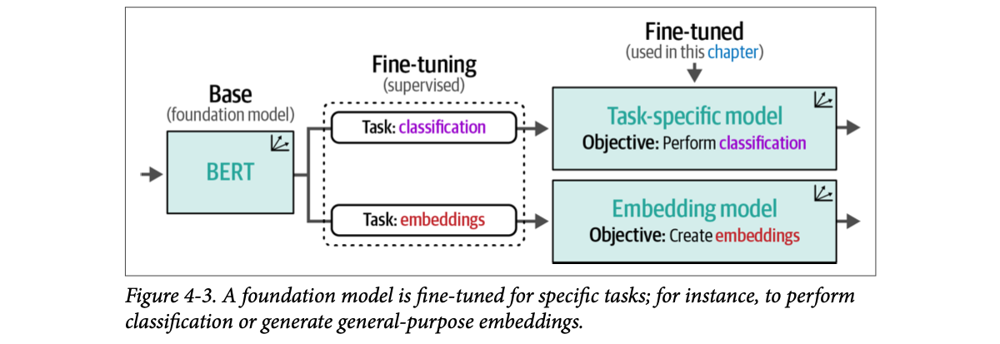
How to read this figure. Read left to right. One base model, BERT (the foundation model), goes through supervised fine-tuning (the dotted box: training with labeled examples) on two different tasks. The "classification" branch produces a task-specific model whose objective is to perform classification. The "embeddings" branch produces an embedding model whose objective is to create embeddings. The arrow at the top says "used in this chapter": the chapter uses these already fine-tuned models, not the base BERT.
How to make these models yourself is covered later: fine-tuning BERT for classification in Chapter 11, creating an embedding model in Chapter 10. In this chapter, both models are kept frozen (nontrainable): their weights are never changed, and we only use their output.
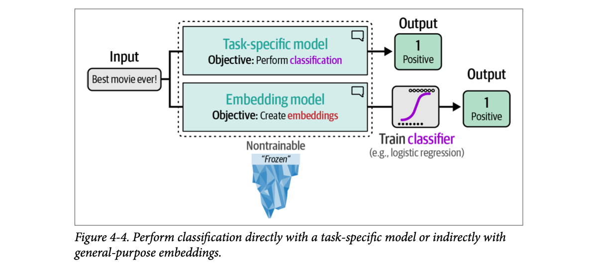
How to read this figure. One input, "Best movie ever!", takes two roads. Top road (direct): the task-specific model outputs the class straight away: 1 · Positive. Bottom road (indirect): the embedding model outputs a vector, which goes into a small classifier you train (the S-shaped curve icon, "e.g., logistic regression"), which then outputs 1 · Positive. The dotted box with the iceberg marks both language models as "Nontrainable / Frozen". The only thing that ever learns in this chapter is the small classifier on the bottom road.
So we lean on pretrained models that others have already fine-tuned for us and see how well they classify our movie reviews.
A task-specific model is a ready-made thermometer: point it at a patient and it reads "fever / no fever". An embedding model is a full blood-test machine: it gives you a sheet of 768 numbers about the patient, and you (the doctor) learn which numbers mean "fever". Both machines come sealed from the factory (frozen); you only learn how to read the blood sheet. Where it breaks: a doctor reads a few numbers; the classifier weighs all 768 at once, and none of them means one human-readable thing.
Fine-tuning shapes what the model's output means. A classification head on top of BERT learns to map the [CLS] representation to class scores (Ch.11). An embedding model is trained so that texts with similar meaning land near each other (Ch.10). Freezing them means inference only: no gradients, no GPU training, and the same model can serve many downstream tasks.
"Task-specific model or embeddings?" "If someone has already fine-tuned a model on my exact task and domain, use it directly. Otherwise embeddings are more reusable: I compute them once, store them (often in the same vector database as my RAG index), and train cheap classifiers for many tasks on top. In a RAG memory system the same embeddings can power retrieval, deduplication and routing."
Choosing models is harder than it looks. At the time of writing, the Hugging Face Hub had over 60,000 models for text classification and more than 8,000 models that generate embeddings. You must pick a model that fits your use case and check:
Architecture first. As in Chapter 1, BERT, a well-known encoder-only architecture, is a popular choice for building task-specific and embedding models. Generative models like the GPT family are incredible, but encoder-only models also excel at task-specific use cases and tend to be significantly smaller.
Over the years many variations of BERT were developed, each trained in different contexts: RoBERTa (Liu et al., 2019), DistilBERT (Sanh et al., 2019), ALBERT (Lan et al., 2019) and DeBERTa (He et al., 2020).
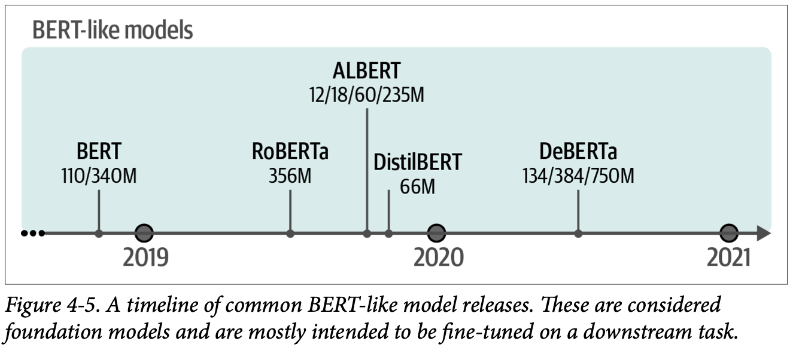
How to read this figure. A time axis from before 2019 to 2021, with each model's release marked and its parameter counts in millions (M); a slash separates sizes of the same family (base/large…). BERT: 110M / 340M (just before 2019). RoBERTa: 356M (mid-2019). ALBERT: 12M / 18M / 60M / 235M (late 2019; beyond the book: it is small because it shares parameters across layers). DistilBERT: 66M (late 2019; a "distilled", smaller copy of BERT). DeBERTa: 134M / 384M / 750M (2020). All are foundation models, meant to be fine-tuned on a downstream task. Compare: these are hundreds of millions of parameters, while generative LLMs are billions.
Each size from Figure 4-5; the variant names (base, large, xlarge…) are inferred, not in the figure. bert-tiny is not in the figure. For scale, the book's later generative examples run to billions of parameters.
Selecting a model can be "a form of art". You cannot try thousands of models, so be efficient. Several models are great starting points and give you an idea of base performance. The book calls them solid baselines:
The task-specific model chosen: Twitter-RoBERTa-base for Sentiment Analysis (cardiffnlp/twitter-roberta-base-sentiment-latest). It is a RoBERTa model fine-tuned on tweets for sentiment analysis. It was not trained on movie reviews, so it is interesting to see how well it generalizes to a new domain.
The embedding model chosen: for embedding models, the MTEB leaderboard (Massive Text Embedding Benchmark) is a great place to start. It lists open and closed source models benchmarked across several tasks. But don't look at performance alone: inference speed should not be underestimated in real solutions. So the book uses sentence-transformers/all-mpnet-base-v2, "a small but performant model".
| candidate (modelled) | quality | latency / text | combined |
|---|
Candidates and numbers are modelled to show the trade-off the book warns about; they are not MTEB scores.
Hiring a cook for a busy dhaba. The top-ranked chef in a cooking contest (top of the leaderboard) may take 20 minutes per dish. A slightly less fancy cook who serves in 2 minutes keeps the queue moving. Where it breaks: a cook's speed is fixed; a model's speed also depends on your hardware, batch size and text length, so measure on your own setup.
Encoder-only models read the whole text once and output a fixed-size vector or a few class scores. There is no token-by-token generation loop, so even a 110M-parameter BERT is fast and cheap compared with a multi-billion-parameter generator. Model families differ in training data, objective and tricks (distillation, parameter sharing, disentangled attention), which is why the same task can give different results across them.
Newer encoder families (for example ModernBERT, 2024) and newer embedding models (for example BGE, E5, GTE, nomic-embed) have appeared since the book. MTEB has also grown into a multilingual version (MMTEB). The selection rules here still hold: check language, size, speed and your own eval.
"How do you choose an embedding model?" "Start from MTEB for the task type I care about (retrieval, classification, clustering) and my language, shortlist two or three small ones, then measure on my own labeled sample: quality, latency at my batch size, embedding dimension (storage cost in the vector DB), and max sequence length. Leaderboard rank alone is not a decision."
Load the selected task-specific model with the transformers pipeline:
from transformers import pipeline
# Path to our HF model
model_path = "cardiffnlp/twitter-roberta-base-sentiment-latest"
# Load model into pipeline
pipe = pipeline(
model=model_path,
tokenizer=model_path,
return_all_scores=True,
device="cuda:0"
)pipeline(...) is the high-level transformers helper: it bundles the tokenizer, the model and the post-processing into one callable.model=model_path: the Hub ID of the fine-tuned RoBERTa sentiment model.tokenizer=model_path: load the matching tokenizer. The book notes this is not needed (it is loaded automatically), but writing it shows what happens under the hood.return_all_scores=True: return a score for every class, not just the top one.device="cuda:0": run on the first GPU.The tokenizer converts the input text into individual tokens (Figure 4-6).
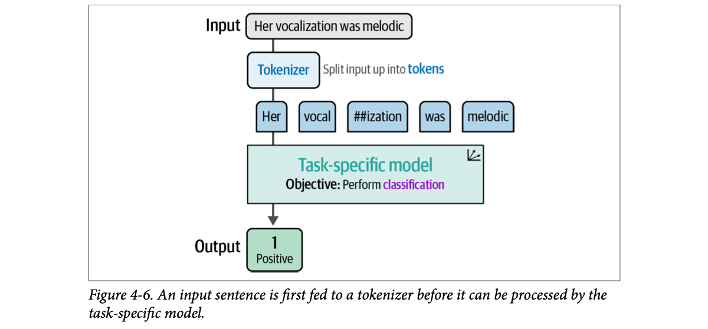
How to read this figure. Top to bottom. The sentence "Her vocalization was melodic" enters the tokenizer ("split input up into tokens"). It comes out as five tokens: Her · vocal · ##ization · was · melodic. The ## marks a piece that continues the previous token (WordPiece style): the rare word "vocalization" was split into "vocal" + "##ization". Only these tokens (as IDs) go into the task-specific model, which outputs 1 · Positive.
Tokens are at the core of most language models (Chapter 2). A big benefit: tokens can be combined to produce representations even for words that were not in the training data (Figure 4-7).
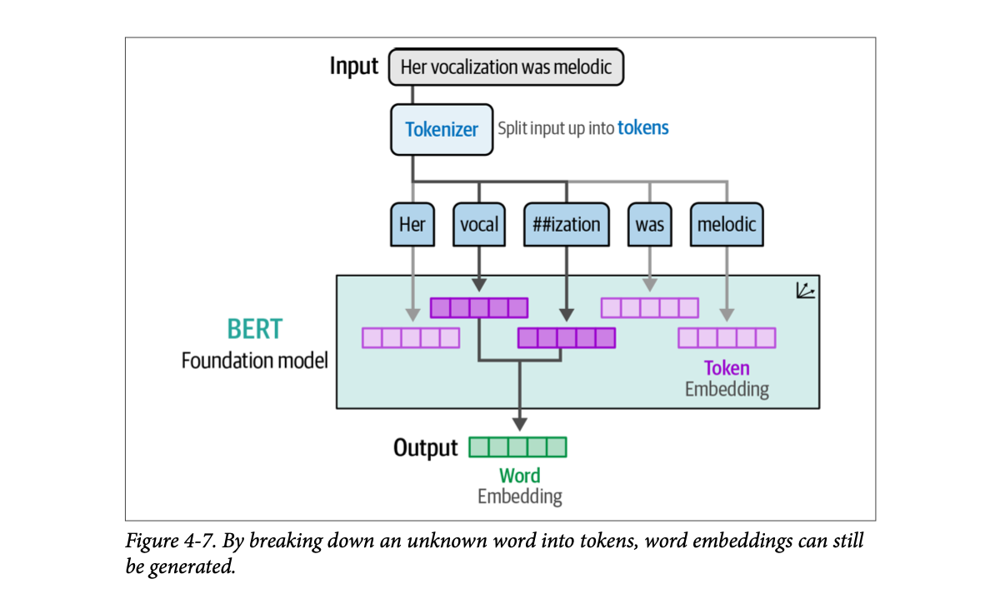
How to read this figure. Same five tokens. Inside the teal BERT foundation model box, each token gets its own token embedding (the rows of small purple squares). The two dark-purple rows belong to vocal and ##ization; their arrows join and produce one green word embedding at the bottom ("Output"). So even if "vocalization" never appeared as a whole word, the model can still build a vector for it from its pieces.
Modelled: greedy longest-match over a tiny hand-made vocabulary (about 120 pieces), WordPiece-style with ##. Real tokenizers have 30,000–50,000+ pieces and RoBERTa actually uses byte-level BPE (Ch.2), so real splits differ.
With everything loaded, run the model on the test split:
import numpy as np
from tqdm import tqdm
from transformers.pipelines.pt_utils import KeyDataset
# Run inference
y_pred = []
for output in tqdm(pipe(KeyDataset(data["test"], "text")), total=len(data["test"])):
negative_score = output[0]["score"]
positive_score = output[2]["score"]
assignment = np.argmax([negative_score, positive_score])
y_pred.append(assignment)KeyDataset(data["test"], "text") wraps the test split so the pipeline reads only the text column, one review at a time, and can stream them efficiently.tqdm(..., total=...) only draws a progress bar.output is a list of class scores (because of return_all_scores=True). The code takes the score at index 0 as negative and index 2 as positive.np.argmax([negative, positive]) returns 0 if negative is bigger, 1 if positive is bigger, which matches the dataset's labels (0 = negative, 1 = positive).The book does not explain index 1. This Cardiff NLP model has three classes (negative, neutral, positive), so index 1 is neutral; the code simply ignores it and compares negative against positive, forcing a binary answer. Also, newer transformers versions deprecate return_all_scores=True in favour of top_k=None, and with that the scores may come back sorted by score rather than by class, so read the label field instead of relying on positions.
Suppose the model returns, for one review (modelled numbers): negative 0.12, neutral 0.30, positive 0.58. The loop keeps [0.12, 0.58]; argmax is index 1, so the prediction is 1 (positive). Now a lukewarm review: negative 0.40, neutral 0.45, positive 0.15. Neutral is the biggest overall, but it is dropped: [0.40, 0.15] → 0 (negative). A tweet-trained model's "neutral" mass is thrown away, which is one reason it may stumble on movie reviews.
Tokenizing is like how a kirana shopkeeper reads an unfamiliar brand name, "Chocolicious", as "Choco" + "licious": two pieces he already knows. He can guess it is a chocolate snack without ever having seen the brand. Where it breaks: some splits are misleading ("therapist" → "the" + "rapist" in some tokenizers); the model has to learn from context that the pieces mean something else together.
The pipeline does three things for each review: (1) the tokenizer maps text to token IDs (and, beyond the book, adds special tokens like <s> and </s> for RoBERTa); (2) the model runs the encoder and a classification head that outputs one logit (raw score) per class; (3) post-processing applies softmax so scores sum to 1. The sentiment knowledge was put into the weights by Cardiff NLP's fine-tuning on tweets; we only run inference.
"How does a model handle a word it has never seen?" "Subword tokenization. The tokenizer breaks unknown words into known pieces, like 'vocal' + '##ization', each piece has an embedding, and the Transformer's contextual layers combine them. So there is no true out-of-vocabulary problem, just longer token sequences for rare words, which also means more tokens and higher cost for unusual languages or jargon."
With predictions in hand, all that's left is evaluation. The book writes one small helper used throughout the chapter:
from sklearn.metrics import classification_report
def evaluate_performance(y_true, y_pred):
"""Create and print the classification report"""
performance = classification_report(
y_true, y_pred,
target_names=["Negative Review", "Positive Review"]
)
print(performance)
evaluate_performance(data["test"]["label"], y_pred)classification_report from scikit-learn compares true labels with predicted labels and prints per-class metrics.target_names gives human names to class 0 and class 1, in that order.Result for the Twitter-RoBERTa model:
precision recall f1-score support
Negative Review 0.76 0.88 0.81 533
Positive Review 0.86 0.72 0.78 533
accuracy 0.80 1066
macro avg 0.81 0.80 0.80 1066
weighted avg 0.81 0.80 0.80 1066To read this report, first see how predictions can be right or wrong. There are four combinations: whether the prediction is correct (True) or incorrect (False), and whether the predicted class is the Positive or the Negative class. Drawn as a 2×2 grid, this is the confusion matrix.
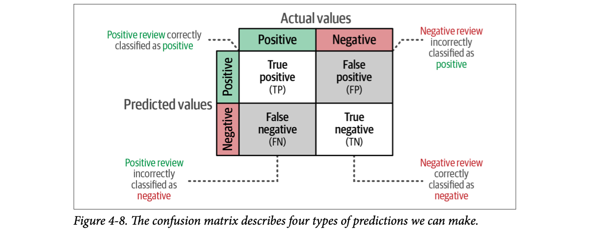
How to read this figure. Columns are the actual values (green Positive, red Negative); rows are the predicted values. The white diagonal cells are correct: True positive (TP) = positive review correctly classified as positive; True negative (TN) = negative review correctly classified as negative. The grey cells are mistakes: False positive (FP) = negative review incorrectly classified as positive; False negative (FN) = positive review incorrectly classified as negative. Tip for remembering: the second word is what the model said; the first word says whether it was right.
From the confusion matrix come several formulas for model quality. The report shows four:
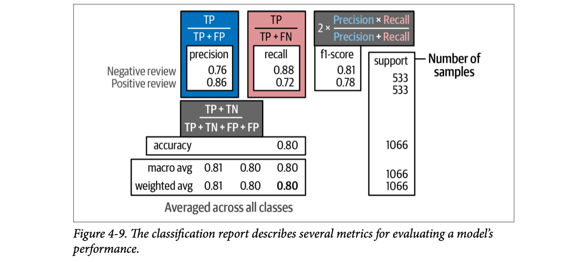
How to read this figure. The same report, with each column labelled by its formula. Blue box: precision (0.76 for negative, 0.86 for positive). Pink box: recall (0.88, 0.72). Grey box: f1-score (0.81, 0.78). Right column: support = number of samples per class (533 each; 1,066 total). Below: accuracy 0.80, and two rows "averaged across all classes": macro avg (plain average of the two class scores) and weighted avg (average weighted by support), with the weighted F1 0.80 in bold. Small slip in the figure: the accuracy denominator is printed "TP + TN + FP + FP"; it should be TP + TN + FP + FN.
Throughout the book the authors use the weighted average F1 score "to make sure each class is treated equally". Here it is 0.80 (row "weighted avg", column "f1-score"), which they call great for a model not trained on our domain data. A note on that wording: macro average is the one that gives each class equal weight; weighted weights by support. Because this test set has 533 of each class, the two rows come out identical in every report in this chapter, so the choice makes no difference here.
Reading the per-class rows tells a story: negative recall is high (0.88) but positive recall is low (0.72). The model often calls positive reviews negative. One plausible reason (our guess, not from the book): the "dropped neutral" effect from plate 05, where mild praise loses to its negative score.
Defaults are reconstructed from the book's report (one set of counts that rounds to the same numbers); change any cell.
| precision | recall | f1 | support |
|---|
Using the reconstructed counts TP = 385, FP = 65, FN = 148, TN = 468:
For the negative row, swap roles: the "positives" are now negative reviews, so precision(neg) = TN / (TN + FN) = 468 / 616 = 0.76 and recall(neg) = TN / (TN + FP) = 468 / 533 = 0.88. These counts are a reconstruction; the book only prints the rounded report.
How could we improve? The book suggests:
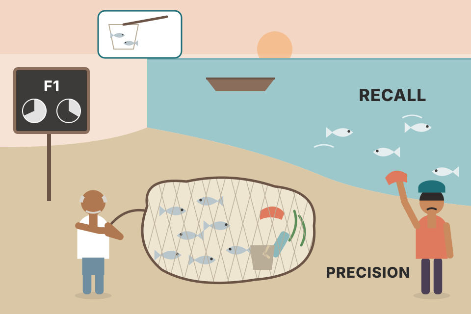
A fishing net. Recall: of all the fish in the lake, how many did your net catch? Precision: of everything in your net, how much is fish and not old chappals? A huge net catches every fish (high recall) and lots of rubbish (low precision). F1 punishes you if either one is bad. Where it breaks: with two balanced classes, "fish" and "rubbish" swap roles for each row of the report; in real fishing you only care about one side.
F1 is a harmonic mean, which is pulled towards the smaller number: precision 1.0 and recall 0.1 give F1 0.18, not 0.55. That is why F1 is preferred over accuracy when classes are imbalanced or when both kinds of error matter. Accuracy alone can hide a model that ignores a rare class.
"Precision vs recall: when do you favour which?" "Precision when false positives are costly, like auto-blocking a payment as fraud or an agent auto-executing a tool call. Recall when misses are costly, like flagging abusive content for human review. F1 when both matter. And always look at per-class rows and the confusion matrix, not just one averaged number." For an LLM gateway's safety classifier, you would tune the threshold on validation data to hit a target recall.
evaluate_performance: scores at 08, 09, 11, 12.The previous example used a model already trained for sentiment. But what if no pretrained model exists for your specific task? Do you have to fine-tune a representation model yourself? The book's answer: no.
Sometimes you will want to fine-tune yourself, if you have enough compute (Chapter 11). But not everyone has access to a lot of computing power. This is where general-purpose embedding models come in: one frozen model gives useful vectors for almost any text, and you build the task-specific part on top cheaply.
| approach | what you train | needs GPU for training? | needs labels? | where |
|---|---|---|---|---|
| Fine-tune BERT yourself | the whole model (~110M+ weights) | yes, usually | yes | Ch.11 |
| Embeddings + classifier | a small classifier (769 weights for logistic regression on 768-dim vectors) | no, CPU is fine | yes | plate 08 |
| Embeddings, zero-shot | nothing | no | no (only label names) | plate 09 |
The 769 count (768 weights + 1 bias for binary logistic regression) is arithmetic, not stated in the book.
You need a tailor-made suit. Fine-tuning is weaving your own cloth. Embeddings are buying good ready cloth (frozen) and paying a local tailor only for the stitching (the small classifier). Where it breaks: if no cloth on the market suits your purpose (very unusual domain text), stitching won't save it, and you are back to fine-tuning.
"You have little compute and a new classification task. What do you do?" "Embed the texts once with a good off-the-shelf embedding model, train logistic regression on the vectors, and evaluate. It trains in seconds on a CPU. Only if that plateaus do I consider fine-tuning or SetFit-style approaches."
Here we do part of the training ourselves, from a more classical angle. Instead of using the representation model to classify directly, we use an embedding model to generate features, and feed those features into a classifier. That is a two-step approach.
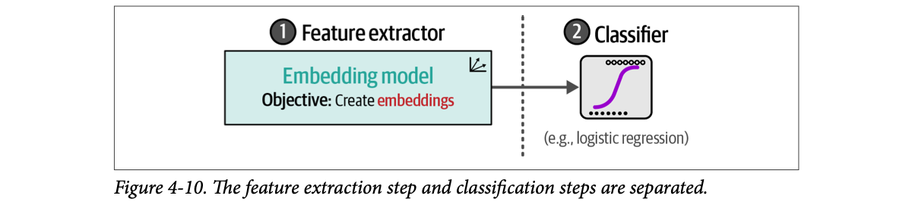
How to read this figure. Two numbered stages split by a dotted vertical line. ① Feature extractor: the embedding model, objective "create embeddings". ② Classifier: the S-curve icon, "e.g., logistic regression". The arrow across the line is the embedding vector. The dotted line is the point: the two parts are built and trained separately.
Big benefit of this separation: we do not need to fine-tune the embedding model, which can be costly. We only train a classifier, like a logistic regression, and that can run on the CPU.
Step 1: convert the text to embeddings with the embedding model. This model is also kept frozen and not updated during training.
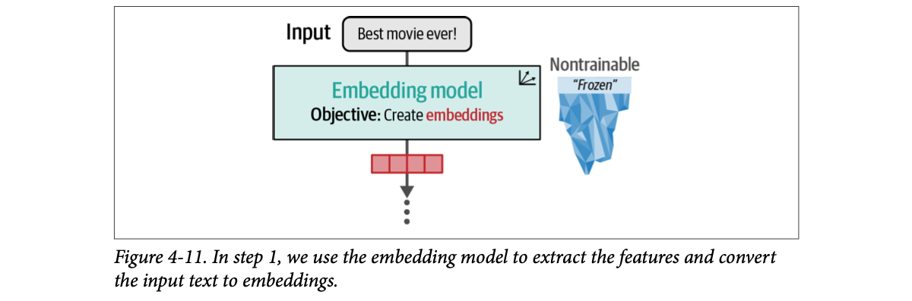
How to read this figure. "Best movie ever!" goes into the embedding model; out comes a short red bar of cells, the embedding (a vector of numbers; drawn with 4 cells, really 768). The iceberg again says Nontrainable · "Frozen". The dots at the bottom mean "continued in the next step".
The book does this step with sentence-transformers (Reimers & Gurevych, "Sentence-BERT", 2019, footnote 6), a popular package for using pretrained embedding models:
from sentence_transformers import SentenceTransformer
# Load model
model = SentenceTransformer("sentence-transformers/all-mpnet-base-v2")
# Convert text to embeddings
train_embeddings = model.encode(data["train"]["text"], show_progress_bar=True)
test_embeddings = model.encode(data["test"]["text"], show_progress_bar=True)
train_embeddings.shape
# (8530, 768)SentenceTransformer(...) downloads and loads the embedding model chosen in plate 04.model.encode(list_of_texts) returns one vector per text, as a NumPy array. It batches internally; show_progress_bar only shows progress..shape == (8530, 768): 8,530 documents, each with an embedding of dimension 768, i.e. 768 numbers per review. The dimension depends on the embedding model.As covered in Chapter 1, these embeddings are numerical representations of the input text.
Step 2: the embeddings become the input features of the classifier. The classifier is trainable, and it does not have to be logistic regression: it can be any model that does classification.
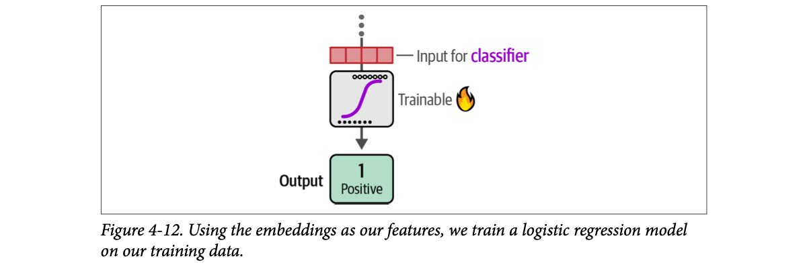
How to read this figure. Continuing from Figure 4-11 (the dots at the top): the red embedding is "input for classifier". The classifier box carries a flame and the word Trainable: this is the only part that learns. Its output is 1 · Positive. Compare with the iceberg (frozen) in 4-11: ice = fixed, fire = learning.
The book keeps it simple with logistic regression. Training needs only the embeddings and the labels:
from sklearn.linear_model import LogisticRegression
# Train a logistic regression on our train embeddings
clf = LogisticRegression(random_state=42)
clf.fit(train_embeddings, data["train"]["label"])
# Predict previously unseen instances
y_pred = clf.predict(test_embeddings)
evaluate_performance(data["test"]["label"], y_pred)LogisticRegression(random_state=42): a linear classifier; the fixed random_state makes the run reproducible..fit(X, y): learns one weight per embedding dimension (plus a bias) so that weighted sums separate positives from negatives..predict(test_embeddings): labels the 1,066 test reviews it has never seen. precision recall f1-score support
Negative Review 0.85 0.86 0.85 533
Positive Review 0.86 0.85 0.85 533
accuracy 0.85 1066
macro avg 0.85 0.85 0.85 1066
weighted avg 0.85 0.85 0.85 1066Training a classifier on top of the embeddings gives an F1 score of 0.85, better than the task-specific model's 0.80, and the errors are now balanced between the classes (0.85/0.86 everywhere). This shows what a lightweight classifier can do while the embedding model stays frozen.
sentence-transformers benefits from a GPU to speed up inference (making the embeddings). You can remove even that dependency by using an external API to create the embeddings. Popular choices are Cohere's and OpenAI's embedding offerings. Then the whole pipeline can run on a CPU.
Each dot is a review squeezed to 2 numbers instead of 768 (modelled). Logistic regression learns a straight boundary. Press train to run gradient descent; drag the slider to move the decision threshold.
For one review the model outputs a 768-number vector x. Logistic regression has learned 768 weights w and a bias b. It computes z = w·x + b (one number), then p = 1 / (1 + e−z), the probability of "positive". If z = 1.4, p = 0.80 → predict 1. If z = −0.6, p = 0.35 → predict 0. Training adjusts w and b so that, over the 8,530 training reviews, p is high for positives and low for negatives. Storage check: 8,530 × 768 float32 numbers ≈ 26 MB, which fits easily in RAM (arithmetic, not from the book).
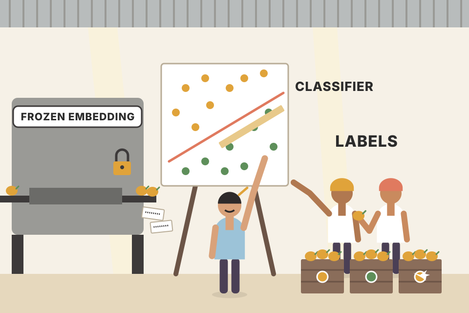
A wholesale mandi grades mangoes. A machine measures each mango on 768 things (colour, firmness, smell…) and never changes (frozen). A junior grader looks at those measurements for 8,530 mangoes that seniors already graded and learns a simple rule: "add these readings with these weights; above a line = export quality". Teaching the junior takes an afternoon; building the machine took years. Where it breaks: the junior can only draw a straight line through the measurements; if quality depends on a twisted combination, you'd need a smarter grader (another classifier) or a better machine.
A good embedding model already places texts with similar meaning near each other, so "positive" and "negative" reviews end up in roughly separate regions of the 768-dimensional space. A linear classifier then only has to find the dividing plane. It's the classic feature extraction pattern from pre-deep-learning ML, with a modern feature extractor. And because the embeddings are general-purpose, you can reuse the same vectors for other tasks.
"Design a cheap intent router for a voice agent." "Embed each utterance with a small embedding model (or an embeddings API), train logistic regression on a few thousand labeled utterances, and serve it on CPU in a few milliseconds. Keep the probability output so low-confidence cases can fall back to an LLM. Retraining is seconds, so new intents are cheap." That is exactly the frozen-embeddings + trainable-head pattern from this plate.
So far we had labeled data. In practice you often don't. Getting labels is resource-intensive and can need a lot of human labour. And is it even worth collecting them?
To test whether a task is feasible at all, we can do zero-shot classification: we have no labeled data. We know the definition of the labels (their names) but have no examples to support them. Zero-shot classification tries to predict the labels of input text even though the model was not trained on them.
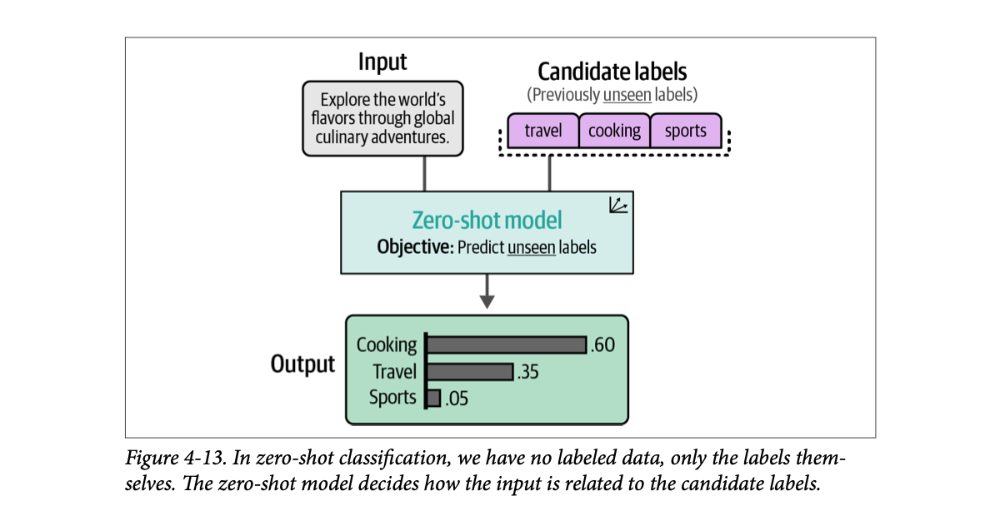
How to read this figure. Two inputs: the text "Explore the world's flavors through global culinary adventures." and the candidate labels travel / cooking / sports, marked "previously unseen" (the model was never trained on them). The zero-shot model's objective is to predict unseen labels. Output is a score per label: Cooking .60, Travel .35, Sports .05. Notice "travel" gets a fair share: the sentence really is about both, and the scores show that.
The neat trick for zero-shot with embeddings: describe each label in words. For example, the negative label for movie reviews can be described as "This is a negative movie review." By embedding the label descriptions and the documents, we have data to work with. We generate our own target labels without any labeled data.
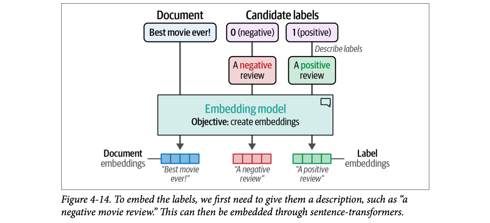
How to read this figure. Top: one document ("Best movie ever!") and two candidate labels, 0 (negative) and 1 (positive). "Describe labels" turns them into short sentences: "A negative review", "A positive review". All three texts pass through the same embedding model. Bottom: one blue document embedding and two label embeddings (red, green). Now document and labels live in the same vector space and can be compared.
Creating label embeddings uses the same .encode function:
# Create embeddings for our labels
label_embeddings = model.encode(["A negative review", "A positive review"])To assign a label, compute the cosine similarity of each document–label pair. Cosine similarity is the cosine of the angle between two vectors: the dot product of the embeddings divided by the product of their lengths:
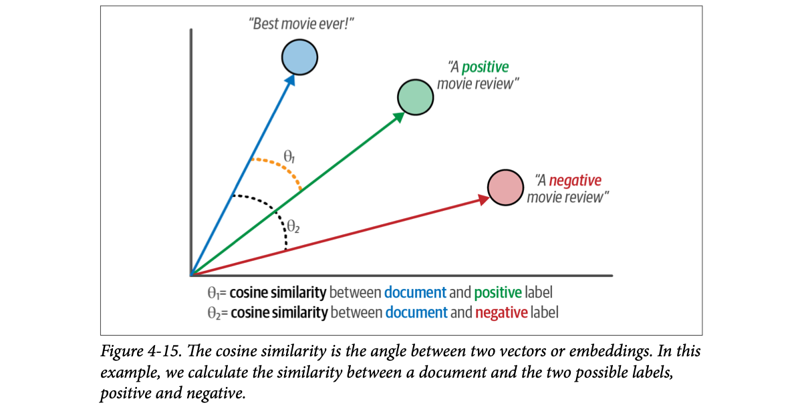
How to read this figure. A 2-D sketch of the embedding space. Three arrows start at the origin: blue (the document "Best movie ever!"), green ("A positive movie review") and red ("A negative movie review"). θ₁ (orange dashes) is the angle between document and positive label; θ₂ (black dashes) between document and negative label. θ₁ is clearly smaller, so the document points more in the "positive" direction. Smaller angle → larger cosine → more similar. (The caption calls the angle itself the cosine similarity; strictly it is the cosine of the angle.)
We check how similar a document is to each label description, and pick the label with the highest similarity:
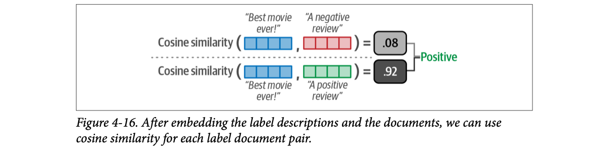
How to read this figure. Two equations. cosine("Best movie ever!", "A negative review") = .08. cosine("Best movie ever!", "A positive review") = .92. The bigger one wins, so the label is Positive. (Beyond the book: these neat numbers are illustrative; real sentence-embedding cosines between related sentences are often closer together, which is why we take the argmax rather than a fixed threshold.)
from sklearn.metrics.pairwise import cosine_similarity
# Find the best matching label for each document
sim_matrix = cosine_similarity(test_embeddings, label_embeddings)
y_pred = np.argmax(sim_matrix, axis=1)
evaluate_performance(data["test"]["label"], y_pred)cosine_similarity(A, B) returns a matrix of shape (1066, 2): row = review, column = label ("negative", "positive").np.argmax(..., axis=1) picks, for each row, the column with the higher similarity: 0 = negative, 1 = positive. The label order in encode([...]) was chosen to match the dataset's 0/1."And that is it!" We only had to name the labels. The result:
precision recall f1-score support
Negative Review 0.78 0.77 0.78 533
Positive Review 0.77 0.79 0.78 533
accuracy 0.78 1066
macro avg 0.78 0.78 0.78 1066
weighted avg 0.78 0.78 0.78 1066An F1 of 0.78 with no labeled data at all. The authors call it quite impressive, and say it shows how versatile embeddings are, "especially if you are a bit creative with how they are used". It is only 0.02 below the task-specific model trained on tweets.
Modelled 2-D vectors. Real embeddings have 768 dimensions, but cosine still just measures the angle between the two arrows; arrow length does not matter.
Toy embeddings (modelled): document d = (0.9, 0.3, 0.1); "positive" p = (0.8, 0.5, 0.0); "negative" n = (0.1, 0.4, 0.9).
If you know zero-shot classification with Transformer models, you may wonder why the book uses embeddings. Natural language inference (NLI) models (models trained to say whether one sentence implies another) are "amazing" for zero-shot classification. But this example shows how flexible embeddings are across tasks. Throughout the book, embeddings appear in most Language AI use cases, and they are "an underestimated but incredibly vital component".
"A negative/positive review" can be improved. Make the descriptions more concrete and specific to the data, such as "A very negative/positive movie review". Then the embedding captures that it is a movie review and focuses more on the extremes of the two labels. The book leaves this as an experiment ("Try it out") and does not report the new score.
New at a railway parcel office, with no training. You get two signboards: "Fragile items" and "Heavy items". For each parcel you ask "which signboard does this look most like?" and put it there. You didn't need anyone to show you examples first, just the signboard wording. Write better signboards ("Glassware and electronics: fragile") and you sort better. Where it breaks: the model has no idea what you mean by a label beyond the words; sarcastic reviews ("great, another two hours of my life gone") look "positive" by wording.
The embedding model was trained so that sentences with similar meaning point in similar directions. "A positive review" sits somewhere in that space near praise-like sentences. A review full of praise points the same way, so its cosine with the positive description is higher. Nothing is learned; we're just measuring which description each review is closest to. It also gives a cheap feasibility test: if zero-shot already gets 0.78, the task is clearly learnable and labeling more data is likely worthwhile.
"You have no labels. How do you classify support tickets?" "Zero-shot first: embed short descriptions of each category and assign each ticket to the nearest by cosine similarity, or ask an LLM with a constrained prompt. Hand-label a small sample to measure it. If it's promising, use those labels (and the zero-shot guesses reviewed by humans) to train a proper classifier." In RAG memory, this same cosine trick routes queries to the right memory type without training anything.
Classifying with generative language models, such as OpenAI's GPT models, works differently. These models take text as input and generate text as output, so they are called sequence-to-sequence models. That is in stark contrast to the task-specific model, which outputs a class.
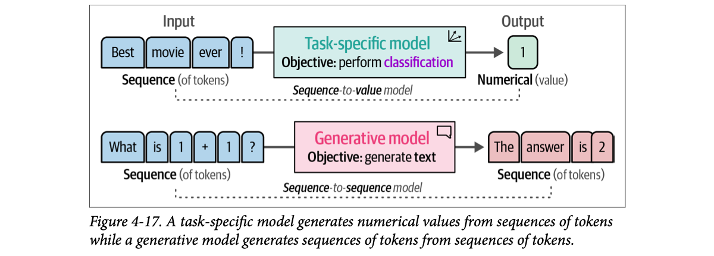
How to read this figure. Top: the token sequence Best · movie · ever · ! goes into the teal task-specific model and out comes a single numerical value, 1. The dotted bracket names it a sequence-to-value model. Bottom: the tokens What · is · 1 · + · 1 · ? go into the pink generative model, objective "generate text", and out comes another token sequence, The · answer · is · 2: a sequence-to-sequence model.
Generative models are usually trained on a wide variety of tasks and usually won't do your use case out of the box. Give one a movie review with no context and it has no idea what to do with it. We must help it understand the context and guide it to the answer we want. This guiding is done mainly through the instruction, or prompt. Iteratively improving the prompt to get the preferred output is called prompt engineering.
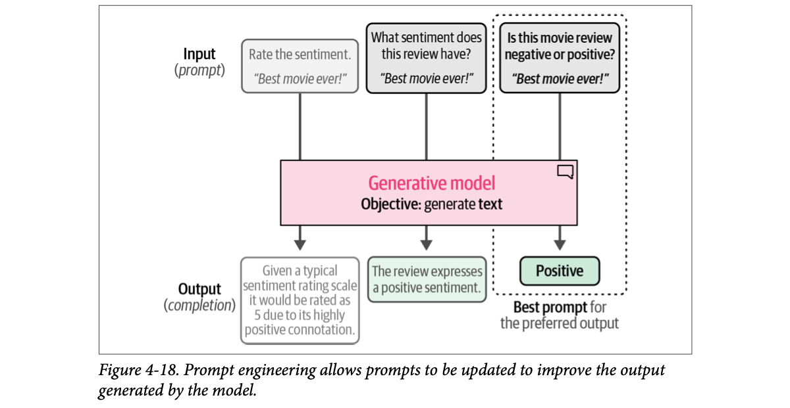
How to read this figure. Three attempts, left to right, each with the same review "Best movie ever!". 1. "Rate the sentiment." → a long completion: "Given a typical sentiment rating scale it would be rated as 5 due to its highly positive connotation." (correct but hard to parse; faded = not ideal). 2. "What sentiment does this review have?" → "The review expresses a positive sentiment." (better, still a sentence). 3. "Is this movie review negative or positive?" → just "Positive", boxed as the "best prompt for the preferred output". The input is called the prompt, the output the completion. Each rewrite moves the output closer to a clean label you can map to 0/1.
Prompts 1–3 and their outputs are Figure 4-18's; prompt 4 adds an output-format rule like the one the book uses for ChatGPT in plate 12.
This section shows how different types of generative models can classify the Rotten Tomatoes dataset. (The book's sentence says "without our Rotten Tomatoes dataset"; from the rest of the section it clearly means with it: both models are scored on the same test split.)
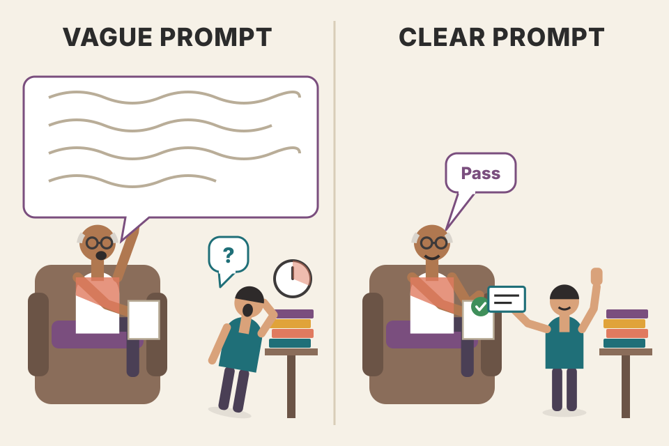
Asking a very knowledgeable but chatty uncle to grade an essay. "What do you think?" gets a 10-minute speech. "Pass or fail? One word." gets "Pass". Same uncle, same knowledge; the question decides how usable the answer is. Where it breaks: the uncle will remember yesterday's instruction; a model only knows what is in this prompt, so every request must carry the instruction again.
A generative model predicts the next token given everything before it. A bare review has many plausible continuations (more review text, a reply, a summary). A prompt that names the task and the allowed answers makes "positive"/"negative" by far the most likely next tokens. Prompt engineering is shaping that probability distribution with words instead of with training.
"How do you get reliable labels out of an LLM?" "Constrain the output: list the allowed labels, ask for only the label (or JSON), use temperature 0, and parse strictly with a fallback for anything unexpected. Where the API supports it, use structured outputs or function calling so the model can only return a valid enum. Then measure on a labeled set just like any classifier." In a tool-calling agent, the tool choice itself is this kind of classification.
The book mostly uses encoder-only (representation) models like BERT and decoder-only (generative) models like ChatGPT. But, as Chapter 1 showed, the original Transformer is an encoder-decoder architecture. Like decoder-only models, encoder-decoder models are sequence-to-sequence models and generally count as generative models.
An interesting family using this architecture is the Text-to-Text Transfer Transformer, or T5 (Raffel et al., 2020, footnote 7). Its architecture is similar to the original Transformer: 12 encoders and 12 decoders stacked together.
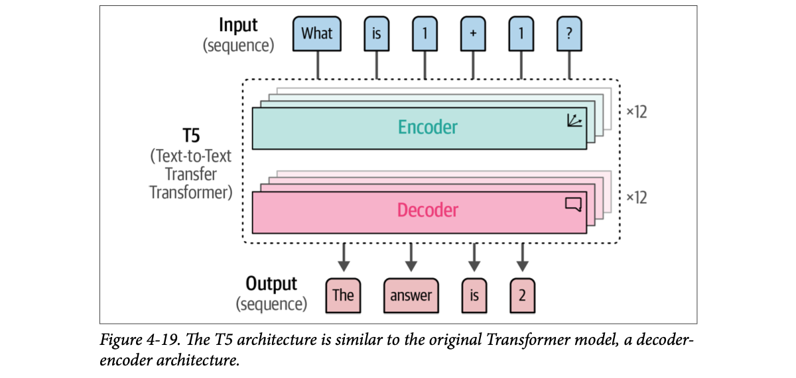
How to read this figure. Input sequence on top (What · is · 1 · + · 1 · ?), output sequence at the bottom (The · answer · is · 2). Inside the dotted T5 box: a stack of teal Encoder blocks marked ×12, then a stack of pink Decoder blocks marked ×12. The encoder reads the whole input; the decoder writes the answer token by token while looking at the encoder's output. (The caption says "decoder-encoder"; the order of data flow is encoder → decoder.)
T5 is trained in two steps.
Step 1 · Pretraining with masked language modeling. Unlike BERT, which masks single tokens, T5 masks sets of tokens (token spans). The model must predict what fills each mask, and a mask may hide several tokens.
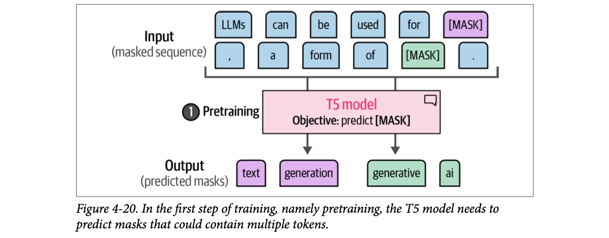
How to read this figure. The input "LLMs can be used for [MASK], a form of [MASK]." has two masks (purple and green). Step ① Pretraining: the T5 model's objective is "predict [MASK]". Output (predicted masks): purple mask → text generation (two tokens); green mask → generative ai (two tokens). One mask, several tokens: that is the span idea.
Toy: masks are placed at random over the book's example sentence. Real T5 uses sentinel tokens such as <extra_id_0> and corrupts about 15% of tokens with spans averaging 3 tokens (Beyond the book: from the T5 paper).
Step 2 · Fine-tuning the base model, "where the real magic happens". Instead of fine-tuning for one task, each task is turned into a sequence-to-sequence task (text in, text out) and all are trained at the same time. So one model learns a wide variety of tasks.
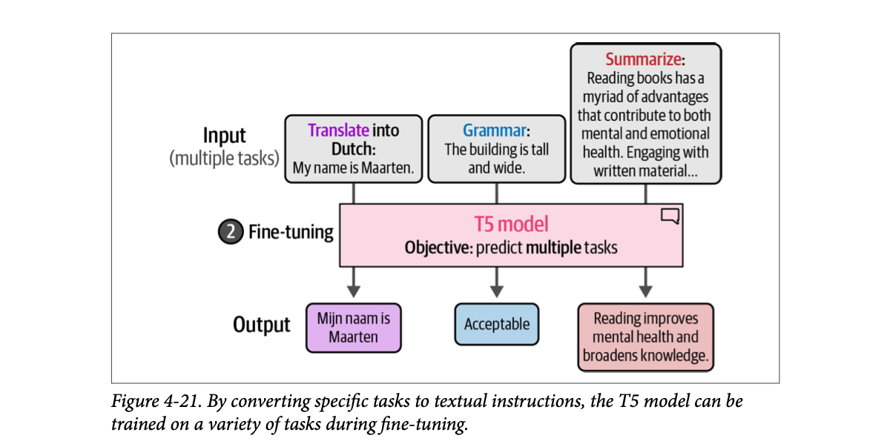
How to read this figure. Step ② Fine-tuning, objective "predict multiple tasks". Each input starts with a task word: "Translate into Dutch: My name is Maarten." → "Mijn naam is Maarten"; "Grammar: The building is tall and wide." → "Acceptable"; "Summarize: Reading books has a myriad of advantages…" → "Reading improves mental health and broadens knowledge." Translation, grammar checking (really a classification) and summarization all become "text in → text out" for one model.
This method was extended in the paper "Scaling instruction-finetuned language models" (Chung et al., 2022, footnote 8), which used more than a thousand tasks during fine-tuning, phrased more like the instructions we know from GPT models. The result is the Flan-T5 family, which benefits from this huge variety of tasks.
Load Flan-T5 through the "text2text-generation" pipeline task, which is generally reserved for encoder-decoder models:
# Load our model
pipe = pipeline(
"text2text-generation",
model="google/flan-t5-small",
device="cuda:0"
)Flan-T5 comes in sizes flan-t5-small / base / large / xl / xxl. The book uses the smallest to speed things up, and invites you to try bigger ones to see if results improve.
Unlike the task-specific model, we can't just give the text and hope for a sentiment. We must instruct the model. So each document gets the prefix prompt "Is the following sentence positive or negative?":
# Prepare our data
prompt = "Is the following sentence positive or negative? "
data = data.map(lambda example: {"t5": prompt + example['text']})
data
# DatasetDict({ train / validation / test: features: ['text', 'label', 't5'], ... })data.map(fn) runs fn on every row of every split and adds the returned keys as new columns. Here it adds a t5 column = prompt + review. Row counts stay 8,530 / 1,066 / 1,066.# Run inference
y_pred = []
for output in tqdm(pipe(KeyDataset(data["test"], "t5")), total=len(data["test"])):
text = output[0]["generated_text"]
y_pred.append(0 if text == "negative" else 1)t5 column.output[0]["generated_text"] is the model's text answer. precision recall f1-score support
Negative Review 0.83 0.85 0.84 533
Positive Review 0.85 0.83 0.84 533
accuracy 0.84 1066
macro avg 0.84 0.84 0.84 1066
weighted avg 0.84 0.84 0.84 1066An F1 of 0.84: the authors call this Flan-T5 model "an amazing first look" at the capabilities of generative models. With no training by us and only a one-line prompt, the smallest Flan-T5 beats the tweet-trained task-specific model (0.80).
Imagine (modelled) 1,000 answers: 480 "negative", 500 "positive", 20 odd ones ("Negative." with a capital and full stop). With 0 if text == "negative" else 1, those 20 become positive. If they were really negative reviews, recall on negatives drops by 20 / 500 = 4 points. A safer parser: text.strip().lower().startswith("neg"), and count unparseable outputs separately.
Approximate Flan-T5 sizes (from the model cards): small ~80M, base ~250M, large ~780M, xl ~3B, xxl ~11B parameters. Encoder-decoder models remain popular for translation and summarization; most chat LLMs today are decoder-only.
T5's pretraining is a fill-in-the-blanks exam where a blank can hide a whole phrase ("LLMs can be used for ______, a form of ______."). Its fine-tuning is a coaching centre that turns every subject into the same format: "Question: … Answer: …", for translation, grammar and summaries alike, so one student learns them all. Flan adds a thousand more subjects. Where it breaks: a student who aced 1,000 subjects still answers in their own words; you must still check the answer format (the parser).
Casting every task as text-to-text gives one model, one loss (predict the target text) and one interface. Training on many tasks phrased as instructions teaches the model to follow instructions it has not seen before, which is why "Is the following sentence positive or negative?" just works. The encoder reads the full prompt bidirectionally; the decoder only has to emit one short word.
"Encoder-only vs decoder-only vs encoder-decoder?" "Encoder-only (BERT) outputs representations: great for classification and embeddings, small and fast. Decoder-only (GPT) generates text left to right: general chat and reasoning. Encoder-decoder (T5) encodes the input fully, then decodes an output: natural for input→output tasks like translation and summarization. All can classify; the choice is about output form, latency and cost."
The book focuses on open source models, but closed source models are a major part of Language AI, ChatGPT above all. The architecture of the original ChatGPT model (GPT-3.5) is not shared, but from the name we can assume it is decoder-only, like the GPT models seen so far.
OpenAI did share an overview of the training procedure, which includes an important part: preference tuning. First, OpenAI manually created the desired output for input prompts (instruction data) and used it to create a first variant of the model.
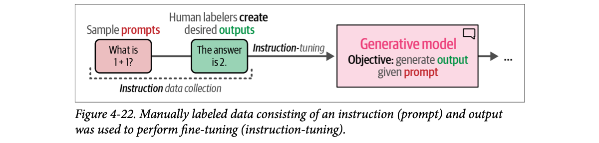
How to read this figure. Left, under the dotted bracket "Instruction data collection": a sample prompt ("What is 1 + 1?") and the desired output written by human labelers ("The answer is 2."). These pairs feed instruction-tuning of the generative model, whose objective becomes "generate output given prompt". The trailing "…" means this is not the end of training.
OpenAI then used that model to generate multiple outputs, which humans ranked from best to worst. The ranking shows a preference for certain outputs (preference data) and was used to create the final model, ChatGPT.
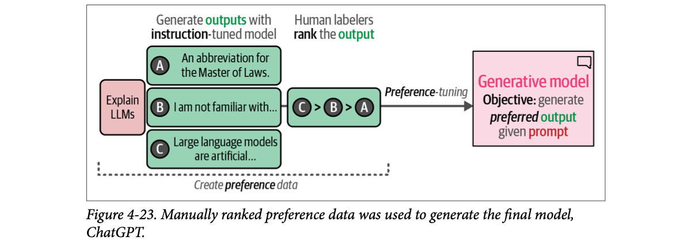
B > A; this preference data is used for preference-tuning a generative model to generate the preferred output given the prompt" loading="lazy">How to read this figure. The prompt "Explain LLMs" goes to the instruction-tuned model, which writes three answers: A "An abbreviation for the Master of Laws." (LLM also means a law degree: wrong meaning), B "I am not familiar with…" (unhelpful), C "Large language models are artificial…" (right). Human labelers rank them: C > B > A. That ranking is the preference data ("Create preference data"), used for preference-tuning: objective "generate preferred output given prompt".
Big benefit of preference data over instruction data: the nuance it carries. By showing the difference between a good and a better output, the model learns to generate text that resembles human preference. Chapter 12 explains how fine-tuning and preference tuning work and how to do them yourself.
Using a closed model is different: instead of loading the model, you access it through OpenAI's API. First create a free account and an API key (the book gives links), then use the key to talk to OpenAI's servers:
import openai
# Create client
client = openai.OpenAI(api_key="YOUR_KEY_HERE")
def chatgpt_generation(prompt, document, model="gpt-3.5-turbo-0125"):
"""Generate an output based on a prompt and an input document."""
messages = [
{"role": "system", "content": "You are a helpful assistant."},
{"role": "user", "content": prompt.replace("[DOCUMENT]", document)}
]
chat_completion = client.chat.completions.create(
messages=messages,
model=model,
temperature=0
)
return chat_completion.choices[0].message.contentopenai.OpenAI(api_key=...) creates a client that sends HTTPS requests to OpenAI. (Never hard-code a real key; read it from an environment variable.)messages is the chat format: a system message that sets behaviour ("You are a helpful assistant."), then a user message.prompt.replace("[DOCUMENT]", document): the prompt is a template with a placeholder; each review is pasted in.temperature=0: always pick the most likely tokens, so the same review gives (nearly) the same answer: what you want for classification.choices[0].message.content is the text of the reply.# Define a prompt template as a base
prompt = """Predict whether the following document is a positive or negative movie review:
[DOCUMENT]
If it is positive return 1 and if it is negative return 0. Do not give any other answers.
"""
# Predict the target using GPT
document = "unpretentious , charming , quirky , original"
chatgpt_generation(prompt, document)The template is "merely an example"; change it however you like. It is kept simple to show the idea. Note the last line: it forces the output format (1 or 0, nothing else), so the answer can be turned into an integer directly.
Shows the exact messages the function sends. No API is called; the "reply" line is a placeholder.
Keep track of usage. External APIs can quickly become costly with many requests. At the time of writing, running the whole test set with gpt-3.5-turbo-0125 cost 3 cents, covered by the free account, but this might change.
With external APIs you may hit rate limit errors: you called the API too often, because some APIs limit requests per minute or per hour. To prevent them, retry the request using methods such as exponential backoff: sleep a short time each time you hit a rate-limit error, then retry; if it fails again, increase the sleep length, until the request succeeds or you reach a maximum number of retries. The book points to OpenAI's guide for using it.
Modelled: wait = base × 2attempt; the API rejects every call until the "limit clears" time. Jitter (random spread of waits, Beyond the book) avoids many clients retrying in lock-step.
Then run all test reviews (the book says you can skip this to save your free credits), and convert the string outputs to integers:
# You can skip this if you want to save your (free) credits
predictions = [chatgpt_generation(prompt, doc) for doc in tqdm(data["test"]["text"])]
# Extract predictions
y_pred = [int(pred) for pred in predictions]
# Evaluate performance
evaluate_performance(data["test"]["label"], y_pred)int(pred) converts "1"/"0" to integers. If the model ever replied with anything else, this line would raise an error; the strict instruction in the prompt plus temperature=0 is what makes it safe here. precision recall f1-score support
Negative Review 0.87 0.97 0.92 533
Positive Review 0.96 0.86 0.91 533
accuracy 0.91 1066
macro avg 0.92 0.91 0.91 1066
weighted avg 0.92 0.91 0.91 1066An F1 of 0.91, a glimpse of the model that brought generative AI to the masses. Per-class rows: negative recall 0.97 but positive recall 0.86, so it leans towards saying "negative".
The big caveat: we don't know what data the model was trained on, so we can't easily trust these metrics. "For all we know, it might have actually been trained on our dataset!" (Beyond the book, this is called data contamination: the test set leaking into training.) Chapter 12 explores evaluating open and closed models on more general tasks.
The book's number: whole test set ≈ $0.03. That is ≈ $0.000028 per review. Scale it (arithmetic on the book's figure, same price assumed): 100,000 reviews ≈ $2.80; 10 million ≈ $280. Time is the other cost: at a modelled 0.5 s per sequential call, 1,066 calls take about 9 minutes; 10 million would take ~58 days unless you send requests in parallel, which is exactly when rate limits and backoff start to matter.
gpt-3.5-turbo-0125 has since been superseded by newer, cheaper OpenAI models; prices and free-tier rules change. Modern APIs also offer structured outputs / JSON schema and logprobs (token probabilities), which give a safer parse and a confidence score for classification. Official SDKs already retry some errors with backoff by default.
ChatGPT's training is like training a new waiter. First, the head waiter shows exactly what to say to customers (instruction data). Then the new waiter tries three ways of describing a dish, and the head waiter ranks them: "C is best, then B, A is wrong" (preference data). Rankings teach the subtle difference between fine and great. Calling the API is like ordering from a cloud kitchen: you don't see the kitchen, you pay per order, and at rush hour they say "try again in a minute" (rate limit). Where it breaks: if the cloud kitchen secretly memorised the menu of your exam (the test set), its perfect dishes prove nothing.
Instruction tuning teaches the format "prompt → helpful answer". Preference tuning (beyond the book's wording here: RLHF, reinforcement learning from human feedback, and related methods; see Ch.12) teaches which of several acceptable answers humans prefer. Together they make the model follow an instruction like "return 1 or 0, nothing else" reliably. Its high score comes from scale and broad training, but because the training data is unknown, a high score on a public dataset might partly be memorization.
"Would you classify with a GPT API in production?" "It's the fastest path to high accuracy with no training, but I'd weigh cost per call, latency, rate limits, vendor dependence and data privacy. I'd add retries with exponential backoff and jitter, strict output parsing, caching for repeated inputs, and a private eval set the vendor can't have trained on. At high volume, I'd use the LLM to label data and distil into a small embeddings classifier." That distillation pattern is common behind LLM gateways.
The chapter covered many techniques for classification, "from fine-tuning your entire model to no tuning at all". Classifying text is not as simple as it looks, and there are many creative ways to do it.
All numbers are the book's classification reports (pdf p141, p145, p148, p153, p157).
| approach | model | training by us | labels needed | runs | F1 |
|---|---|---|---|---|---|
| Task-specific | cardiffnlp/twitter-roberta-base-sentiment-latest | none | none (someone else's) | local GPU | 0.80 |
| Embeddings + logistic regression | all-mpnet-base-v2 + sklearn | small classifier on CPU | yes (8,530) | local | 0.85 |
| Zero-shot embeddings | all-mpnet-base-v2 | none | only label names | local | 0.78 |
| Flan-T5 + prompt | google/flan-t5-small | none | none | local GPU | 0.84 |
| ChatGPT + prompt | gpt-3.5-turbo-0125 | none | none | OpenAI API (~3 cents) | 0.91* |
* Training data unknown; the test set may have been seen during training.
| term | meaning in this chapter |
|---|---|
| Text classification | Assigning a label/class from a fixed set to an input text. |
| Pretrained model | A model already trained on lots of data, used as-is. |
| Representation model | Encoder-only model (BERT family) that outputs vectors or class scores, not text. |
| Generative model | Model that outputs text (decoder-only GPT, or encoder-decoder T5). |
| Foundation model | A base model (e.g. BERT) meant to be fine-tuned for downstream tasks. |
| Fine-tuning | Further training a pretrained model on a specific task. |
| Task-specific model | A representation model fine-tuned for one task (e.g. sentiment). |
| Embedding model | A model that turns text into general-purpose vectors. |
| Frozen | Weights are not updated; only the output is used. |
| Tokenizer / token | Splits text into pieces (tokens), including subwords like ##ization. |
| Hugging Face Hub | Platform hosting models and datasets. |
| Train / validation / test split | Data for fitting / extra check after tuning / final scoring. |
| Confusion matrix | 2×2 table of TP, FP, FN, TN. |
| Precision | TP / (TP + FP): how many found items are relevant. |
| Recall | TP / (TP + FN): how many relevant items were found. |
| Accuracy | (TP + TN) / all: overall correctness. |
| F1 score | Harmonic mean of precision and recall. |
| Support | Number of true samples of each class (533 each). |
| Macro / weighted average | Plain average over classes / average weighted by support. |
| MTEB | Massive Text Embedding Benchmark leaderboard. |
| Logistic regression | Linear classifier that outputs a probability via the sigmoid. |
| Zero-shot classification | Predicting labels with no labeled examples, only label names. |
| Cosine similarity | Dot product divided by product of lengths: cosine of the angle between vectors. |
| NLI | Natural language inference; NLI models are another zero-shot route. |
| Sequence-to-value / sequence-to-sequence | Tokens → a number / tokens → tokens. |
| Prompt / prompt engineering | The instruction given to a generative model / iteratively improving it. |
| T5 | Text-to-Text Transfer Transformer: encoder-decoder, 12 + 12 layers, span masking, multitask fine-tuning. |
| Flan-T5 | T5 instruction-fine-tuned on more than 1,000 tasks. |
| Instruction tuning | Fine-tuning on human-written prompt → output pairs. |
| Preference tuning | Fine-tuning on human rankings of outputs (preference data). |
| Temperature | Randomness of generation; 0 = most likely tokens. |
| Rate limit / exponential backoff | API cap on calls per time / retrying with growing waits. |
| TF-IDF | Classic word-weighting text representation; a strong baseline. |
DatasetDict splits; .map adds the prompt column for T5.pipeline for the sentiment model and for "text2text-generation"; KeyDataset to stream a column..encode.classification_report, LogisticRegression, cosine_similarity.argmax over scores; progress bars.A task-specific model (outputs the class directly) and an embedding model (outputs vectors that a classifier uses). Both language models are frozen; only the classifier on top of the embeddings is trained.
Train 8,530, validation 1,066, test 1,066 (5,331 positive + 5,331 negative overall). Train is used to fit, test to score; validation is for checking generalization if you tuned hyperparameters on train and test.
It compares the negative score (index 0) with the positive score (index 2) and takes the argmax to get 0 or 1. Index 1 (the model's neutral class, Beyond the book) is ignored.
Precision = TP/(TP+FP): of everything predicted positive, how much really is. Recall = TP/(TP+FN): of everything really positive, how much was found.
Accuracy = 533/1066 = 0.50. Positive class: precision 0.50, recall 1.0, F1 0.67; negative class: recall 0, F1 0. Weighted F1 ≈ 0.33. Try it in the calculator in plate 06.
Both classes have the same support (533), so weighting by support gives the same result as a plain average.
(8530, 768): one 768-number embedding per training review; 768 is the dimension of all-mpnet-base-v2.
It only learns a few hundred weights on precomputed vectors. Creating the embeddings benefits from a GPU, but you can call an embedding API (Cohere, OpenAI) so the whole pipeline runs on CPU.
Describe each label in words ("A negative review", "A positive review"), embed the descriptions and the documents with the same model, compute cosine similarity for each document–label pair, and pick the label with the highest similarity. F1 0.78 with no labels.
The book suggests it should help: the embedding captures that it's a movie review and focuses on the extremes. It does not report a number, so you'd have to measure it.
Sequence-to-value maps tokens to a number (the task-specific classifier). Sequence-to-sequence maps tokens to tokens (generative models like T5 and GPT), so their text output must be converted to a label.
Pretrained with masked language modeling over token spans (a mask can hide several tokens); fine-tuned with every task turned into text-to-text and trained together. Flan-T5 extends this to more than 1,000 instruction-style tasks.
The check is text == "negative", so "Negative" fails it and the review is counted as positive (1). The parser matters.
Instruction data shows one good answer; preference data shows which of several answers is better (C > B > A), teaching the difference between good and better, i.e. what humans prefer.
Its training data is unknown, so the public test set may have been in it (contamination). Use a private, fresh eval set; also account for API cost, rate limits (exponential backoff), latency and privacy before relying on it.